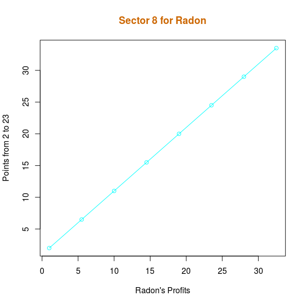
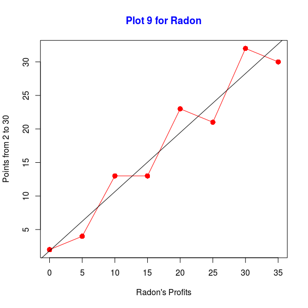
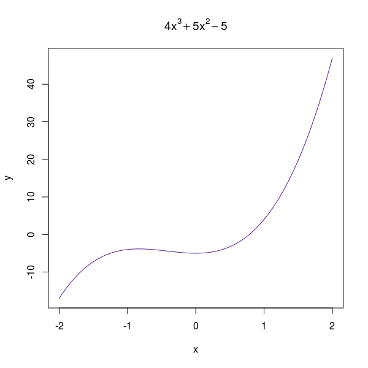
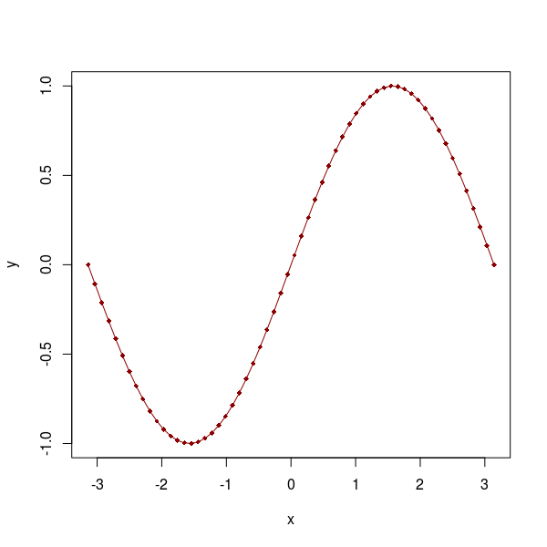
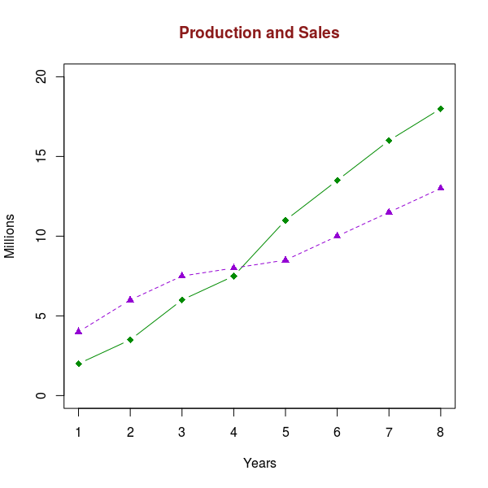
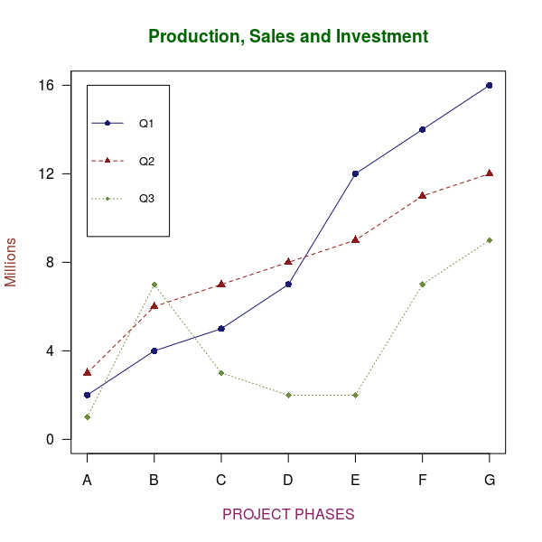

R Plot 01
top
X <- c(1,5.5,10,14.5,19,23.5,28,32.5)
Y <- c(2,6.5,11,15.5,20,24.5,29,33.5)
k <- 8
min <- 2
max <- 23
name <- "Radon"
plot(
X, Y,
type="o",
col="581",
xlab = paste(name, "'s Profits", sep = ""),
ylab = paste("Points from ", min, " to ", max, sep = "")
)
title(
main = paste("Sector ", k, " for ", name, sep = ""),
font.main = 2,
col.main = "#CC6600"
)

R Plot 02
top
X <- c(0,5,10,15,20,25,30,35)
Y <- c(2,4,13,13,23,21,32,30)
s <- 8
min <- 2
max <- 30
name <- "Radon"
plot(
X, Y,
type = "o",
col = "red",
main = paste("Sector ", s, " for ", name, sep = ""),
pch = 16,
cex = 1.4,
font.main = 2,
col.main = "blue",
xlab = paste(name, "'s Profits", sep = ""),
ylab = paste("Points from ", min, " to ", max, sep = "")
)
abline(
lm(Y ~ X)
)

R Plot 03
top
curve(
4*x**3 + 5*x**2 - 5,
-2, 2,
col = "purple4",
main = expression(4*x**3 + 5*x**2 - 5),
ylab = "y"
)

R Plot 04
top
x <- seq(
-pi, pi,
length = 60
)
y <- sin(x)
plot(
x, y,
pch = 18,
cex = 0.8,
col = "red4"
)
lines(
x, y,
col = "red4"
)

R Plot 05
top
X <- c(1, 2, 3, 4, 5, 6, 7, 8)
P <- c(2, 3.5, 6, 7.5, 11, 13.5, 16, 18)
S <- c(4, 6, 7.5, 8, 8.5, 10, 11.5, 13)
plot(
X, P,
ylim = c(0, 20),
type = "b",
pch = 18,
cex = 1.2,
col = "green4",
xlab = "Years",
ylab = "Millions"
)
lines(
S,
type = "b",
pch = 17,
lty = 2,
col = "darkviolet"
)
title(
main = "Production and Sales",
col.main = "firebrick4",
font.main = 2
)

R Plot 06
top
Q1 <- c(2, 4, 5, 7, 12, 14, 16)
Q2 <- c(3, 6, 7, 8, 9, 11, 12)
Q3 <- c(1, 7, 3, 2, 2, 7, 9)
yaxismax <- max(Q1, Q2, Q3)
plot(
Q1,
pch = 16,
type = "b",
col = "midnightblue",
ylim = c(0, yaxismax),
axes = FALSE,
ann = FALSE
)
axis(
1,
at = 1:7,
lab = c("A", "B", "C", "D", "E", "F", "G")
)
axis(
2,
las = 1,
at = 4 * 0:yaxismax
)
box()
lines(
Q2,
pch = 17,
type = "b",
lty = 2,
col = "firebrick4"
)
lines(
Q3,
pch = 18,
type = "b",
lty = 3,
col = "darkolivegreen4"
)
title(
main = "Production, Sales and Investment",
col.main = "darkgreen",
font.main = 2)
title(xlab = toupper("Project Phases"), col.lab = "maroon4")
title(ylab = "Millions", col.lab = "tomato4")
legend(
1, yaxismax,
c("Q1", "Q2", "Q3"),
cex = 0.8,
col = c("midnightblue", "firebrick4", "darkolivegreen4"),
pch = c(16, 17, 18),
lty = 1:3
)
